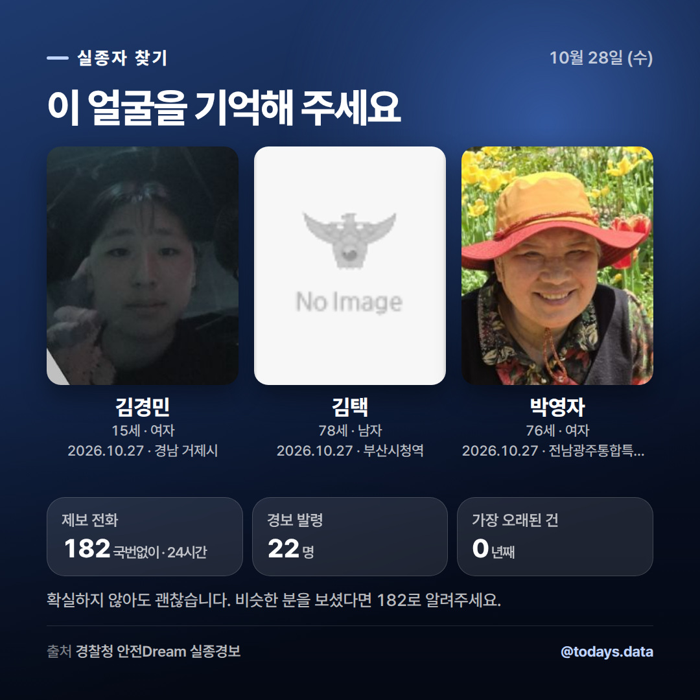
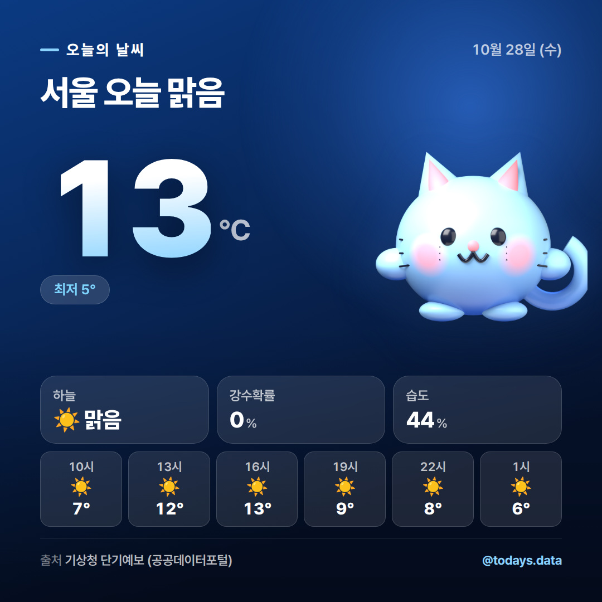
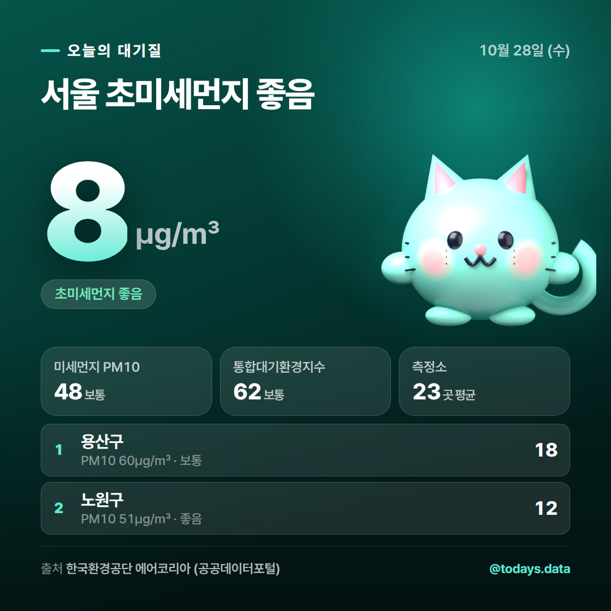
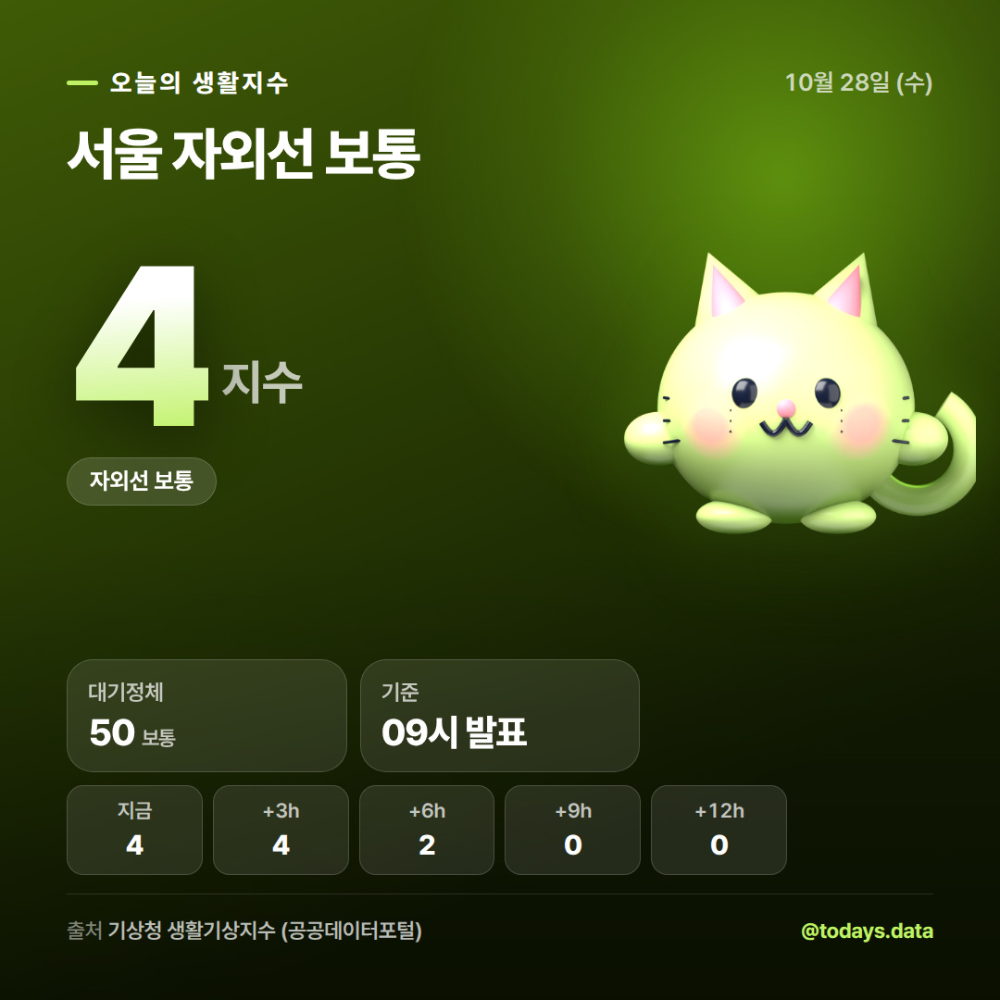

10월 28일 · 이미지를 길게 눌러 저장하고, 캡션은 복사 버튼으로


☀️ 서울 10월 28일 (수) 날씨 서울은 맑음, 최고 13도 최저 5도입니다. 강수확률은 최대 0%, 평균 습도는 44%예요. 시간대별 기온 · 10시 7° (강수 0%) · 13시 12° (강수 0%) · 16시 13° (강수 0%) · 19시 9° (강수 0%) · 22시 8° (강수 0%) · 1시 6° (강수 0%) 매일 아침 공공데이터로 만든 날씨 카드를 올립니다. 📊 출처 : 기상청 단기예보 조회서비스 / 공공데이터포털 #오늘날씨 #날씨 #서울날씨 #날씨정보 #기상청 #공공데이터 #데이터시각화 #일상정보 #출근길 #날씨예보

😷 서울 대기질 (2026-10-28 10:00 기준) 초미세먼지(PM2.5) 8㎍/㎥ — 좋음 미세먼지(PM10) 48㎍/㎥ — 보통 통합대기환경지수 62 — 보통 오늘 수치가 높은 곳 · 용산구 PM2.5 18㎍/㎥ (보통) · 노원구 PM2.5 12㎍/㎥ (좋음) · 종로구 PM2.5 10㎍/㎥ (좋음) '나쁨' 이상이면 외출 시 마스크 챙기세요. 📊 출처 : 한국환경공단 에어코리아 / 공공데이터포털 #미세먼지 #초미세먼지 #대기질 #오늘미세먼지 #에어코리아 #공공데이터 #서울날씨 #생활정보 #마스크 #환경

🌤 서울 10월 28일 생활지수 자외선는 4 (보통) 입니다. · 자외선 4 보통 · 대기정체 50 보통 09시 발표 기준이며 3시간 간격 예측값입니다. 📊 출처 : 기상청 생활기상지수 조회서비스 / 공공데이터포털 #생활기상지수 #자외선지수 #체감온도 #오늘날씨 #건강관리 #기상청 #공공데이터 #데이터시각화 #오늘의데이터